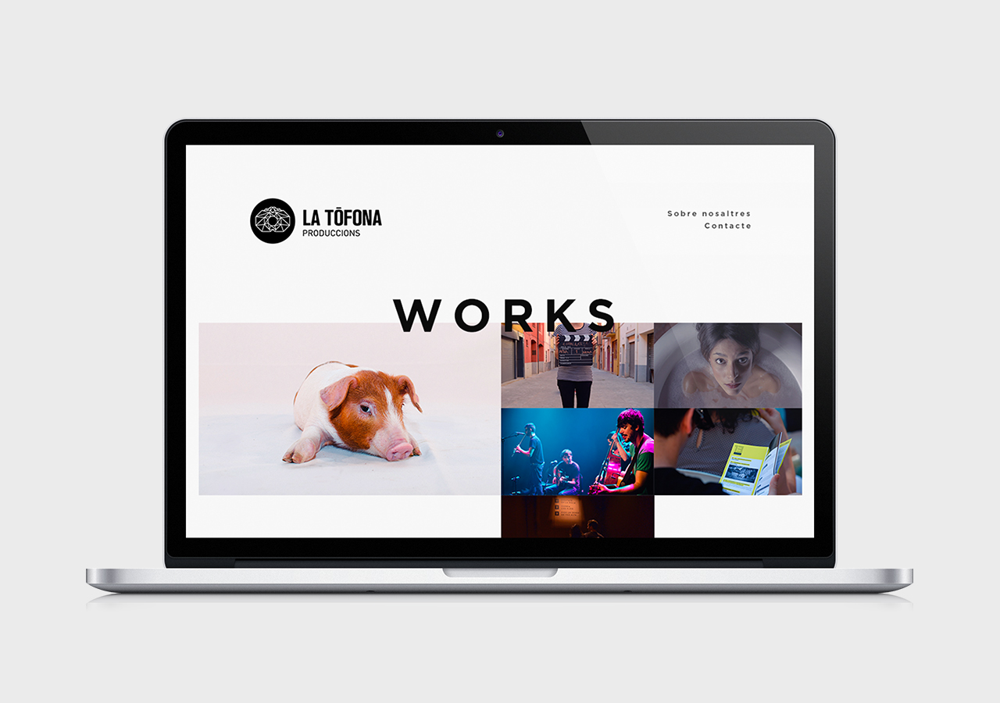

La Tòfona
Rol: Arquitectura de la Información y Diseño Visual | Desarrollo en Construcción
Proyecto realizado para La Tòfona Produccions, productora audiovisual creada en Barcelona por jóvenes estudiantes.
En vías de desarrollo. Maqueta realizada pensando en multidispositivo (Responsive Design).